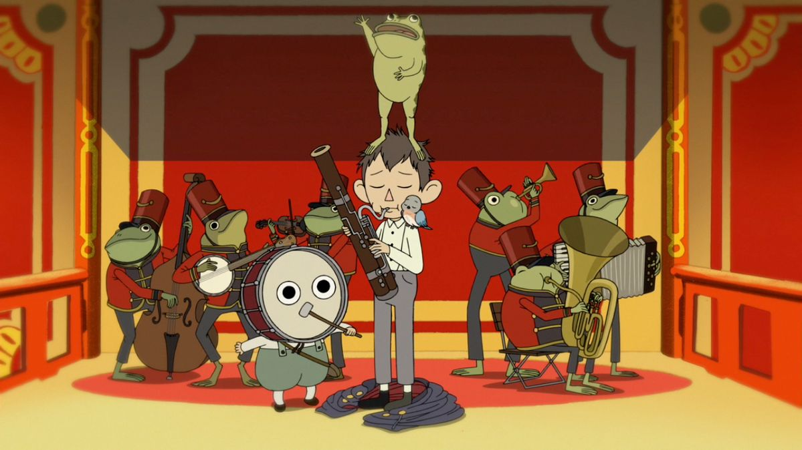

La historia sigue a dos hermanos, Wirt y Greg, que se pierden en un extraño y misterioso bosque llamado Lo Desconocido. Para encontrar el camino a casa, deben atravesar distintos pueblos y situaciones surrealistas, acompañados por un leñador enigmático y una rana que Greg lleva siempre consigo. En cada episodio se cruzan con personajes excéntricos, criaturas fantásticas y escenarios que mezclan lo tierno con lo inquietante. A medida que avanzan, van descubriendo que algo oscuro habita el bosque y que ellos podrían estar más involucrados de lo que creen. La serie combina fantasía, humor, melancolía y estética otoñal, con un tono de cuento clásico y música muy característica. Es corta, redondita y súper simbólica.
